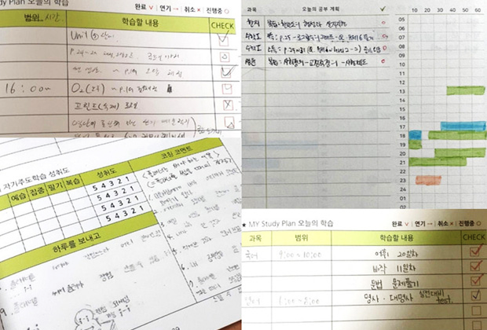
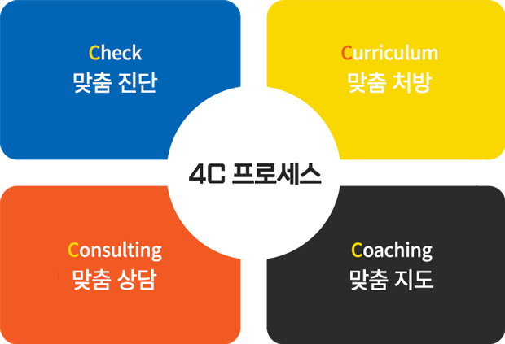
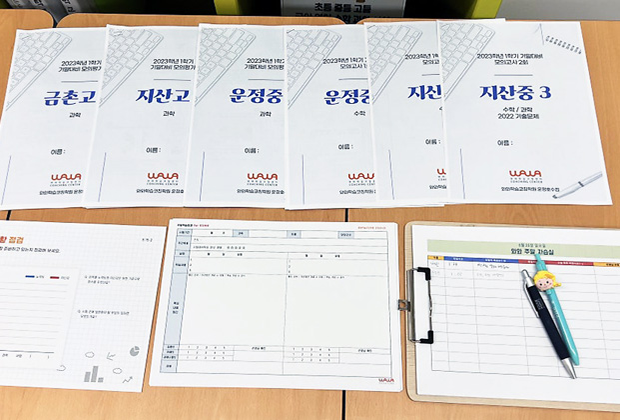
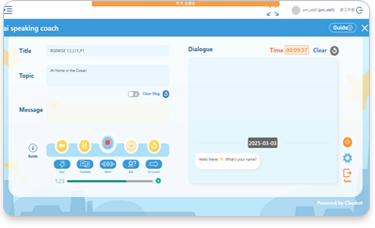
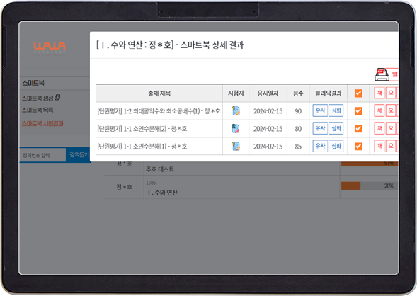
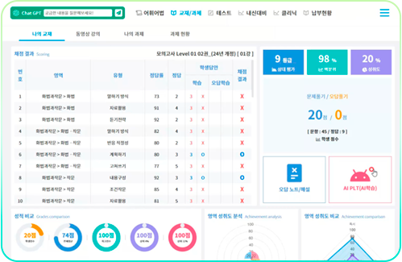
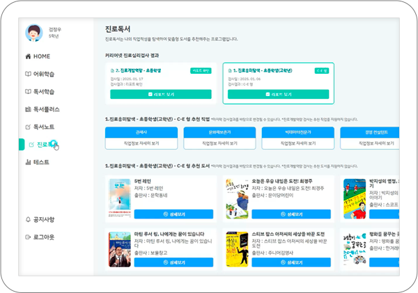

PLAN · 플랜관리
할 일을 구체적으로 정하기
선생님과 목표와 우선순위를 정하고, 공부 시간과 분량을 플래너에 담습니다. 실행을 돌아보며 다음 계획을 세우는 연습을 합니다.
확인할 것 목표 · 우선순위 · 실행 기록
와와의 학습관리 시스템
맞춤 진단과 선생님의 코칭에 과목별 AI 학습을 연결합니다. 무엇을 배울지, 어떻게 연습할지, 다음에는 무엇을 보완할지 살펴보세요.
01 · 4C 학습코칭
현재 이해도와 학습 성향을 확인하고, 그 결과에 맞춰 학습 내용을 정합니다. 지도와 상담에서 확인한 변화는 다음 학습 방향에 반영합니다.

02 · 세 가지 관리
공부할 내용을 정하는 일과 실제로 해내는 일은 연결되어 있습니다. 선생님은 계획, 학습 과정, 학생의 생활 리듬을 함께 살핍니다.

선생님과 목표와 우선순위를 정하고, 공부 시간과 분량을 플래너에 담습니다. 실행을 돌아보며 다음 계획을 세우는 연습을 합니다.
확인할 것 목표 · 우선순위 · 실행 기록

이해 수준에 맞는 교재와 학습법을 활용합니다. 오답노트, 백지노트, 마인드맵 등으로 부족한 부분을 정리하고 다시 익힙니다.
확인할 것 이해도 · 학습 도구 · 재학습
학생과 대화하고 학부모와 피드백을 나누며 공부 습관과 생활 리듬을 살핍니다. 학습이 어려워진 이유도 함께 확인합니다.
확인할 것 학습 습관 · 생활 리듬 · 소통
사진은 본사에서 소개한 학습·교재 예시입니다. 사용하는 교재, 관리 주기와 운영 방식은 지점 및 학생 상황에 따라 달라질 수 있습니다.
03 · 과목별 AI 학습
AI 학습 자료는 진단과 연습 결과를 보여줍니다. 과목별로 다른 학습 도구를 활용하고 선생님의 확인과 지도를 연결하는 방식입니다.
아래 학년은 본사 프로그램 안내 기준입니다. 지역별 개설 과목, 이용 가능한 프로그램, 교재·기기와 비용은 상담에서 확인해 주세요.
수준 진단 후 부족한 영역에 맞춰 연습합니다. 초등은 파닉스와 4영역 학습, AI 말하기를, 중·고등은 독해·구문·듣기와 교과 학습을 연결합니다.

평가 결과를 바탕으로 취약 단원과 오답을 확인합니다. 수준에 맞는 학습지와 유사·변형·심화 문제를 활용해 부족한 개념을 다시 익힙니다.

독서·문학·문법을 나누어 살피고 내신과 모의고사 학습을 준비합니다. 어휘와 문법, 문제 풀이에서 부족한 부분을 찾아 오답 학습으로 연결합니다.

독서 지수와 진로 흥미를 살펴보고 학생에게 맞는 책을 추천합니다. 읽고 끝내는 대신 독서 기록과 포트폴리오를 통해 학습 과정을 돌아봅니다.

화면은 본사 공개 프로그램 예시이며 실제 제공 화면과 구성은 변경될 수 있습니다. AI 분석만으로 성적 향상을 보장하지 않습니다.
04 · 상담부터 피드백까지
진단과 계획, 실행 확인과 재학습, 시험 대비와 피드백을 분리하지 않고 하나의 학습 흐름으로 연결합니다.
최근 성적, 어려워하는 단원, 숙제 습관, 시험 전 루틴을 확인해 학생에게 필요한 관리 방향을 잡습니다.
계획표를 쓰는 데서 끝내지 않고 실제 수행 여부와 미완료 원인을 확인해 다음 계획에 반영합니다.
과제량만 보는 것이 아니라 풀이 과정, 실수 유형, 집중이 흐트러지는 지점을 함께 살펴봅니다.
틀린 문제를 다시 푸는 수준을 넘어 개념 부족, 계산 실수, 문제 해석 오류를 나누어 관리합니다.
학교 진도와 시험 범위에 맞춰 복습 우선순위를 정하고, 직전에는 자주 틀리는 유형을 다시 확인합니다.
학생의 학습 상황을 상담과 피드백으로 공유해 가정에서도 같은 방향으로 도울 수 있게 합니다.
FAQ
진단부터 피드백까지 학습관리 과정에서 자주 묻는 내용을 정리했습니다.
학생의 현재 상태를 진단한 뒤 주간 계획을 세우고, 과제 수행과 오답 재학습, 시험 대비와 학부모 피드백으로 이어지는 흐름으로 관리합니다.
학생 상황과 수업 운영 기준에 따라 확인 주기는 달라질 수 있지만, 계획이 실제 실행으로 이어지는지와 미완료 원인을 중심으로 점검합니다.
틀린 문제를 다시 푸는 데서 끝내지 않고 개념 부족, 계산 실수, 문제 해석 오류를 구분해야 같은 실수가 반복되는 원인을 확인할 수 있습니다.
본사 안내 기준으로 영어·수학은 초1~고3, 국어는 중1~고3, 독서는 초1~중2입니다. 실제 개설 과목과 이용 가능 여부는 희망 지점에 확인해야 합니다.
AI 학습은 진단과 반복 연습을 돕는 도구입니다. 학습 결과를 선생님과 확인하고 교재 학습, 오답 정리, 다음 계획에 연결하는 과정이 함께 필요합니다.
학생의 학년, 학교, 어려운 과목과 최근 학습 자료를 준비해 주세요. 이용 가능한 프로그램, 수업 방식, 교재·기기와 비용을 상담에서 함께 확인하면 좋습니다.